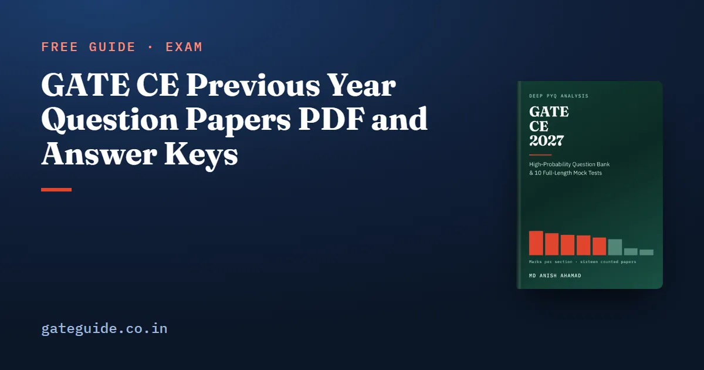

GATE CE Previous Year Question Papers PDF and Answer Keys

Every GATE Civil paper since 2019 is free on an official GATE site, both sets of every year, with answer keys and no sign-up. Finding them is harder than it should be. The older organisers' sites are gone, the pre-2023 files hold both sets in one PDF, and two years' keys are hidden inside the papers. This guide gives you the official links for all sixteen papers from 2019 to 2026, explains each trap in the files, and shows how to use a paper once you have it.
In this guide
- Key takeaways
- The words this guide uses
- Where the archive actually lives
- The papers and keys, with links
- What is inside the older files
- How to mark your own attempt with the key
- How to read a paper so it teaches you something
- Which years matter for the 2027 syllabus
- What the papers cannot tell you
- Quick revision
Key takeaways
- The official archive is served by IIT Guwahati and IIT Roorkee from 2019, and by IIT Madras from 2021. Where a file sits on more than one host, the bytes are identical.
- GATE CE has two papers a year, Set 1 and Set 2, each with its own key. Always note which set a question came from.
- For 2019 to 2022 one PDF holds both sets back to back. Separate per-set files start in 2023.
- The 2019 and 2020 keys exist, printed inside the paper files. No host publishes them separately.
- 25 marks across the sixteen papers fall outside the 2027 syllabus, mostly prestressed concrete and free vibration. Check the current notification at gate2027.iitm.ac.in for any change.
The words this guide uses
A question paper is the organiser's PDF of the 65 questions. An answer key is the organiser's table of question number, type, section, key and marks.
A set is a different paper. Civil is held in two sessions, and each session sits its own paper, Set 1 or Set 2. The archive is the previous-years download page each new organiser maintains.
Every CE paper has the same frame: 65 questions and 100 marks, 30 one-mark and 35 two-mark questions, General Aptitude at exactly 15. The GATE marking scheme guide explains MCQ, MSQ and NAT marking, which is common to every paper.
Where the archive actually lives
Most organisers' own sites are gone. Checked on 10 October 2026, IIT Kharagpur's GATE host (2022) times out, and IIT Kanpur's (2023) and IIT Delhi's (2020) do not resolve. What survives is the archive the recent organisers keep:
- IIT Guwahati archive, CE from 2019, the fullest of the three
- IIT Roorkee archive, CE from 2019
- IIT Madras archive, CE from 2021 only
If a link below has moved, try the same file on another host. See the GATE 2027 exam schedule for where the cycle stands.
The papers and keys, with links
These are the sixteen GATE CE papers of 2019 to 2026, the papers the GATE CE 2027 book counts question by question. Every link was checked on 10 October 2026. Page numbers refer to the combined file of that year.
| Year, institute | Set 1 | Set 2 |
|---|---|---|
| 2026, IIT Guwahati | paper, key | paper, key |
| 2025, IIT Roorkee | paper, key | paper, key |
| 2024, IISc Bengaluru | paper, key | paper, key |
| 2023, IIT Kanpur | paper, key | paper, key |
| 2022, IIT Kharagpur | file pp 2–43, key | same file pp 47–86, key |
| 2021, IIT Bombay | file pp 2–37, key | same file pp 42–74, key |
| 2020, IIT Delhi | file pp 2–18, key pp 19–20 | same file pp 22–38, key pp 39–40 |
| 2019, IIT Madras | file pp 2–20, key pp 21–23 | same file pp 28–46, key pp 47–49 |
The archives also carry the same 2025 files under other names, and the 2026 files on the IIT Madras host are named CE1.pdf and CE2.pdf rather than CE_1.pdf and CE_2.pdf.
What is inside the older files
Both sets in one file. For 2019 to 2022, each year's paper is one PDF. A full-page "SESSION - 1" divider opens it, and a "SESSION - 2" divider separates the sets. No official host publishes a per-set CE paper for those years under any name.
Keys inside the papers. No host publishes a separate 2019 or 2020 CE key, so people conclude none exists. Both are printed at the end of each session in the paper file. The 2019 Set 1 key is printed twice, on pages 21 to 23 and again on 24 to 26.
Unlisted keys. The per-set 2021 keys and the 2022 Set 2 key exist on the IIT Guwahati host but are not linked from its index page. The table links them directly.
Image-only pages. The 2019 papers and keys and the 2021 papers have no text layer, and the 2020 file is a print-to-PDF of an online viewer with the questions stored as images. Text search finds nothing; scroll to the question number.
Trap: The 2019 headers read "Set No 1" and "Set No 3". Those are booklet numbers, not paper sets. Set 1 and Set 2 follow the file's own session order.
How to mark your own attempt with the key
Your score is the marks you earned, minus a third of a mark for each wrong one-mark MCQ and two-thirds for each wrong two-mark MCQ. MSQ and NAT carry no negative marks.
Here is the marks from correct answers, the number of wrong one-mark MCQs and the number of wrong two-mark MCQs. Suppose you earn 50 marks with three one-mark and six two-mark MCQs wrong:
Mark each set with its own key. Two sets of a year share a year, not a key.
How to read a paper so it teaches you something
The second use of a paper is as data. Assign each question to a section of the 2027 syllabus and add the marks. The technical marks must close at 85.
Counted this way, 2019 Set 1 gives Structural 16, Geotechnical 15, Water Resources 13, Transportation 11, Engineering Mathematics 10, Environmental 10, Geomatics 5, Construction Materials and Management 4, and 1 mark outside the 2027 syllabus. Add them: 85. A column that does not close is wrong.
Remember: The year is the unit of evidence, not the paper. Sets of one year differ by 6.2 marks on average, papers of different years by 15.4.
The sets still differ. 2022's two sets were 16 marks apart, which is why scores are normalised across sessions, as the GATE score and normalisation guide explains. The counted result for all sixteen papers is in the GATE CE subject-wise weightage guide.
Which years matter for the 2027 syllabus
All eight years are useful, with two filters.
First, content. 25 marks across the sixteen papers fall on material the 2027 syllabus no longer names: 14 of prestressed concrete, 8 of free vibration, 2 of dynamic pile formulae and 1 under the deleted remote sensing line. Skip those questions. Geomatics was largely rewritten, so its past questions are the weakest guide. The GATE CE 2027 syllabus changes guide lists every change.
Second, format. 2019 and 2020 contain no MSQs. The count was 2 in 2021, then 14, 21, 8, 26 and 10 from 2022 to 2026, over both sets. Practise MSQs from the recent years.
2019 is the one year in this record set under IIT Madras, the 2027 organiser. Its two papers carried 1 mark of concrete structures against 10 of steel. That is one observation, not a forecast, but it is a reason to prepare steel as well as concrete.
In one line: Use 2019 and 2020 for content, the recent years for format, and drop the questions on deleted lines.
What the papers cannot tell you
Sixteen papers show what has been asked and in what form, and how far two sets of a year can differ. They cannot tell you how the 2027 panel will divide the marks.
The GATE CE 2027 book carries the count of all sixteen papers set by set, and 924 questions written for the book with worked solutions, including 10 mock tests.
Quick revision
- Download from IIT Guwahati or IIT Roorkee for 2019 onward, or IIT Madras from 2021.
- CE has two sets a year; mark each set with its own key.
- For 2019 to 2022, one PDF holds both sets; use the page ranges in the table.
- The 2019 and 2020 keys are printed inside the paper files.
- Score with ; wrong MSQs and NATs cost nothing.
- Skip the 25 marks of deleted material, mostly prestressed concrete and free vibration.
- Practise MSQs from 2022 onward; 2019 and 2020 have none.
Frequently asked questions
Where can I download GATE CE previous year question papers officially?
From the archives kept by GATE organising institutes. IIT Guwahati (gate2026.iitg.ac.in/download.html) and IIT Roorkee (gate2025.iitr.ac.in/download.html) carry CE papers from 2019, and IIT Madras (gate2027.iitm.ac.in/download) from 2021. Where a file sits on more than one host the bytes are identical. Download pages change between cycles, so check the current notification.
Why does GATE CE have two question papers every year?
Civil Engineering is held in two sessions with two different papers, Set 1 and Set 2, each with its own answer key. Every year from 2019 to 2026 had both. The two sets of a year can differ noticeably, by 16 marks section by section in 2022, which is why GATE normalises scores across sessions.
Is there an official answer key for GATE CE 2019 and 2020?
Yes, but not as a separate file. No official host publishes a standalone CE key for either year. Each key is printed inside the question-paper file, at the end of each session: pages 21 to 23 and 47 to 49 of the 2019 file, and pages 19 to 20 and 39 to 40 of the 2020 file.
Why can I not find the GATE CE 2021 or 2022 Set 2 paper as a separate PDF?
Because none exists on an official host. For 2019 to 2022 the archive publishes one file per year holding both sets back to back, separated by a SESSION 2 divider page. Separate per-set papers start in 2023. The 2022 Set 2 paper is pages 47 to 86 of the 2022 file.
Are GATE CE papers from 2019 still useful for the 2027 syllabus?
Mostly. Counted against the 2027 syllabus, 25 marks across all sixteen papers from 2019 to 2026 fall on material it no longer names, mainly prestressed concrete and free vibration. Skip those questions. The 2019 and 2020 papers also contain no multiple-select questions, so use them for content, not for format practice.
Sources
- GATE 2027 official website (IIT Madras)
- GATE official paper archive (IIT Madras)
- GATE official paper archive (IIT Guwahati)
- GATE official paper archive (IIT Roorkee)
- GATE 2027 CE syllabus (IIT Madras)
Dates, fees and the syllabus are set by the GATE 2027 organising institute and can change. Always confirm at gate2027.iitm.ac.in.